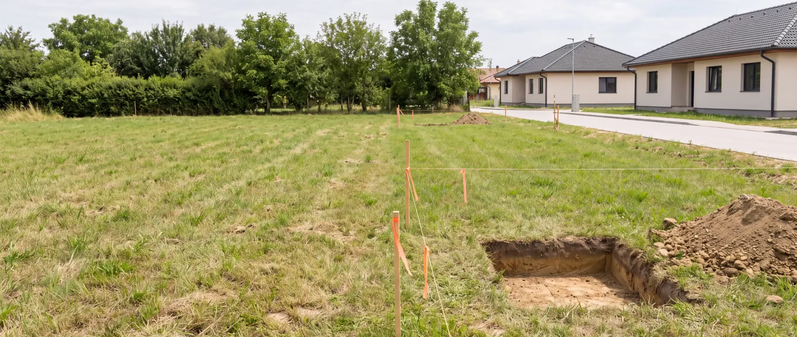

Telekalkalmasság
A tartály szinte mindig elfér valahol. A rendszer viszont csak akkor működik, ha a tisztított víznek is van hová mennie — és ez a nehezebb kérdés. Itt végigvesszük, mi dönti el.

Miről dönt ez a szakasz
A telekalkalmasság nem egyetlen adat
Egy szennyvíztisztító rendszer telekalkalmassága nem egyetlen kérdésre adott válasz. A talaj, a talajvíz, a rendelkezésre álló terület, a házból érkező szennyvízcső szintje, a terepviszonyok, a kút és más érzékeny objektumok, valamint a tisztított víz elhelyezésének lehetősége együtt határozza meg, hogy mi valósítható meg a telken — és milyen kialakítással.
A 147/2010. Korm. rendelet maga is előírja, hogy az oldómedencés és az egyedi biológiai rendszereket a talaj adottságainak, a felszín alatti víz mélységének és a szennyvízmennyiségnek a figyelembevételével kell méretezni. Magas talajvízállású és fokozottan érzékeny területeken további feltételek érvényesek. Ezért nem elég egyetlen adatot ismerni.
Ez a szakasz nem terméket ajánl. A célja az, hogy végigvezesse a kritikus telekfeltételeken, megmutassa, melyik adatot honnan szerezheti meg, és a végén látható legyen, hol tart: elegendő-e a meglévő adat az előszűréshez, vagy mérés, illetve szakértői vizsgálat szükséges.
Két külön döntés
A tartály elfér — a víznek is kell hová mennie
A tartály telepíthetősége
- A berendezés fizikai elhelyezése a telken
- Elegendő hely a tartálynak és a gépészetnek
- A szennyvízcső szintje és a fogadószint viszonya
- Talajvíznél külön szerkezeti megoldás — rögzítés, betonmedence
- Munkagép behajtása és a tartály beemelése
- Későbbi szervizhozzáférés
A tisztított víz elhelyezése
- Hová kerül a naponta kilépő vízmennyiség
- A talaj MÉRT vízbefogadó képessége, nem a neve
- A szezonálisan legmagasabb talajvízállás
- A szikkasztó helyigénye a terhelés függvényében
- Kút, vízbázisvédelem, területi érzékenységi besorolás
- Ahol a talajba szikkasztás nem megfelelő: más elhelyezési irány
Miért fontos ez a különbségtétel
A második kérdés a nehezebb
A leggyakoribb félreértés az, hogy a két kérdést egynek nézik. Attól, hogy a tartály magasabb talajvíznél is biztonságosan rögzíthető — az ÖkoTech ilyenkor a műanyag tartály köré betonmedencés kialakítást alkalmaz —, még nem következik, hogy ugyanazon a telken a tisztított víz talajba szikkasztása is megfelelő.
A vízelhelyezés ráadásul maga is két kérdés: műszakilag lehetséges-e (befogadja-e a talaj a napi vízmennyiséget), és jogilag, környezetvédelmi szempontból alkalmazható-e az adott helyen. Bármelyik megállíthatja vagy módosíthatja a projektet.
A gyakorlati következmény: ha a vízelhelyezés iránya nincs tisztázva, a projekt nem ajánlatkész — akkor sem, ha a tartály helye már megvan.
A vizsgálandó tényezők
Mi határozza meg a telek alkalmasságát?
Hét témakör, mindegyik önálló oldalon. A sorrend nem kötelező, de van logikája: a talaj és a talajvíz a legtöbb továbbit befolyásolja, a hozzáférés pedig a legkésőbb derül ki, ha nem nézik meg időben.
-
Talaj és szivárgóképesség
A talaj neve — homokos, agyagos — önmagában nem méretezési adat. A kérdés az, milyen sebességgel képes a helyszíni talaj a vizet befogadni.
Talaj és szivárgás -
Talajvíz
Nem a mai vízállás számít, hanem a szezonálisan előforduló legmagasabb. A tartály rögzítése és a szikkasztás két külön kérdés.
Talajvíz -
Kút és védőtávolság
A zárt tartály és az a pont, ahol a víz ténylegesen a talajba kerül, vízvédelmi szempontból nem ugyanaz az objektum.
Kút és védelem -
Telekméret és rendelkezésre álló terület
Nem a telek négyzetmétere a kérdés, hanem a ház, kút, behajtó és közművek után ténylegesen használható terület.
Telekméret -
Lejtés és csőmélység
A házból kilépő cső magassága meghatározza, milyen mélyre kerülhet a berendezés befolyója — és hogy kell-e átemelő.
Lejtés és csőmélység -
Járműterhelés és hozzáférés
A tartály fölött nem vezethető gépjárműforgalom külön kialakítás nélkül, és a rendszernek később is hozzáférhetőnek kell maradnia.
Terhelés és hozzáférés -
Hogyan gyűjtsem össze az adatokat?
Adatforrásonként: honnan szerezhető meg, ki tudja megadni, és melyiknél nem elegendő a becslés.
Adatgyűjtés
Négy lehetséges állapot
Nem „alkalmas" vagy „nem alkalmas"
A telekalkalmasság ritkán bináris. A vizsgálat végén ezek valamelyikébe sorolható a telek — és mindegyikhez más következő lépés tartozik.
-
Standard. Az ismert adatok alapján nincs azonosított kritikus akadály, a szokásos kialakítás valószínű. Ez nem engedély és nem végleges méretezés — a tervezés a szokásos úton folytatható.
-
Feltételes. A telepítés megvalósítható, de külön műszaki elem szükséges: tartályrögzítés, magasítás, átemelő, betonakna vagy nagyobb szikkasztó. Ezek a projekt költségét és kivitelezési idejét is befolyásolják.
-
Vizsgálandó. Egy vagy több kritikus adat hiányzik, vagy csak becslés áll rendelkezésre. Itt nem a telek a probléma, hanem az adat: mérés, dokumentum vagy helyszíni felmérés zárja le.
-
Jelenleg nem igazolt. Az ismert körülmények alapján a tervezett megoldás nem támasztható alá — jellemzően vízvédelmi vagy talajvíz-okból. Ilyenkor más vízelhelyezési irány, más technológia vagy szakértői vizsgálat következik.
Gyakori kérdések
Amit a leggyakrabban kérdeznek
Elég, ha megadom a telek adatait, vagy ki kell jönniük?
Attól függ, melyik adatot ismeri és milyen minőségben. Ha a kritikus adatok — talaj, talajvíz, szabad terület, csőkilépési szint — dokumentumból vagy mérésből ismertek, sok esetben elegendő a távoli előszűrés. Ha ezek egy része csak becslés, a felmérés nem formalitás, hanem az egyetlen mód a lezárásukra. Ezt minden témakörnél külön jelezzük.
Mi van, ha valamelyik adatot egyszerűen nem tudom?
A „nem tudom” érvényes válasz, és nem jelent kizárást. Adatbeszerzési útvonal következik belőle: megmondjuk, honnan szerezhető meg, ki tudja megadni, és hogy elegendő-e hozzá dokumentum, vagy mérés kell.
A szomszéd tapasztalata elfogadható adatnak?
Előzetes jelzésnek hasznos — különösen a szezonális talajvízről —, de nem azonos értékű egy mérési eredménnyel vagy hivatalos dokumentummal. Az előszűrésben külön jelöljük, hogy egy adat becsült, dokumentált vagy mért, mert a továbblépés ettől függ.
Magas talajvíznél eleve kizárt a rendszer?
Nem. Két külön kérdésre bomlik: a tartály biztonságos telepítése és a tisztított víz elhelyezhetősége. Az elsőre gyakran van műszaki megoldás. A második viszont a talajvíz mellett vízvédelmi és területi besorolástól is függ, ezért külön vizsgálatot igényelhet.
Kap-e engedélyt vagy hivatalos igazolást az előszűrésből?
Nem. Az előszűrés műszaki tájékozódás: megmutatja, mi látszik akadálynak és milyen adat hiányzik. Engedélyezhetőségről hatóság, méretezésről jogosult tervező, hidrogeológiai kérdésről szakértő nyilatkozik.